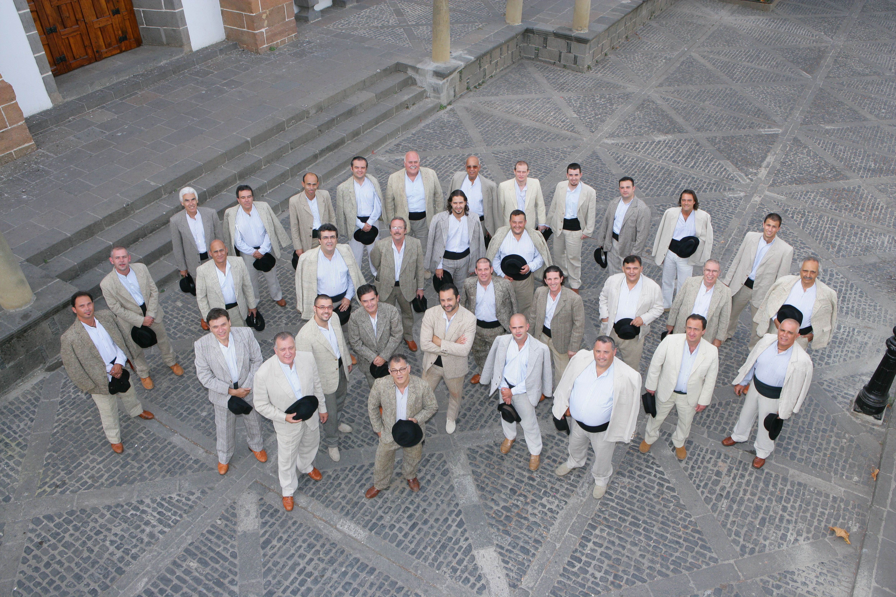

Nuestros artistas invitados
Este año contamos con varios artistas reconocidos en todas las islas de nuesro archipiélago:
Quevedo
Los Gofiones

La Pantera

Este es el festival anual de música canaria en vivo, con actividades y actuaciones. Desde artistas clásicos hasta los urbanos, es el espacio para que todos los públicos disfruten de la música.
En-clave LPA tiene como propósito promover la música y los ritmos tradicionales de las islas para su difusión entre los más jóvenes y que se mantenga el conocimiento del folclore mediante la música.
Este año 2026 tendrá lugar los días 27, 28 y 29 de noviembre en el estadio Gran Canaria Arena.
Este año contamos con varios artistas reconocidos en todas las islas de nuesro archipiélago:

| Horario | Viernes 27 | Sábado 28 | Domingo 29 |
|---|---|---|---|
| 12:00 - 14:00 | Demostración bailes tradicionales | Taller baile urbano | Taller bailes tradicionales |
| 14:00 - 16:00 | Descanso y food trucks | ||
| 16:00 - 17:00 | Taller instrumentos tradicionales | Demostración baile urbano | Concierto La Pantera |
| 17:00 - 18:00 | Concierto Los Gofiones | Taller instrumentos tradicionales | |
| 18:00 - 19:00 | Concierto Quevedo | Taller instrumentos tradicionales | |
| 19:00 - 20:00 | Taller baile urbano | Demostración bailes tradicionales | |
| 20:00 - 22:00 | Meet and greet con el invitado del día | ||
| Escenario principal | Escenario este | Escenario oeste | Exterior |
|---|---|---|---|
| Conciertos de invitados | Demostración de baile urbano | Taller de baile urbano | Food trucks |
| Meet and Greet con invitados | Demostración de bailes tradicionales | Taller de bailes tradicionales | |
| Taller de instrumentos tradicionales | |||
Con estos medios, trataremos su información personal para registrarle en una actividad o entablar un diálogo con usted, por ejemplo, responder preguntas sobre nuestros servicios. Solo tratamos la información que nos proporciona en relación con nuestra comunicación.
Si existiera la necesidad en un caso particular de almacenar su información personal por un período más prolongado, este podría ser el caso.